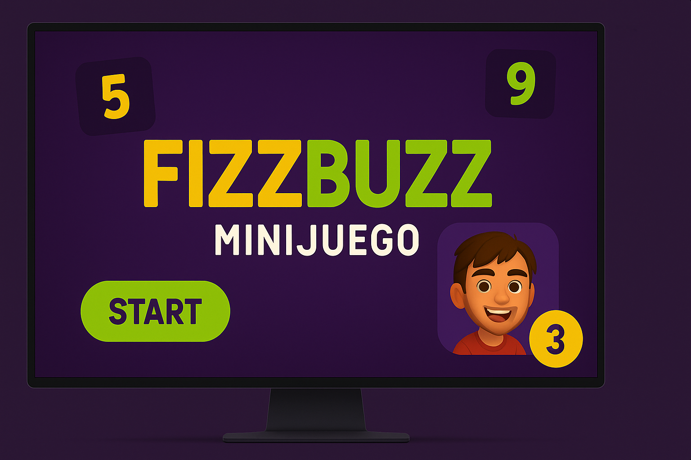
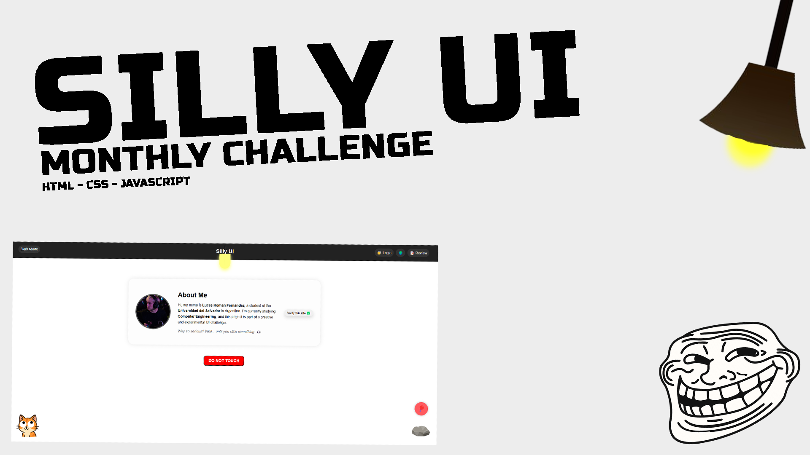

Mis Proyectos
Fizzbuzz Minijuego
Mini web interactiva con scroll animado, modo oscuro y diseño adaptable.
HTMLCSSJavaScript

SillyUI - Aprils Fools Interface
Interfaz interactiva con animaciones absurdas y componentes únicos. Ideal para experimentar con diseño UX no convencional.
HTMLCSSJavaScript
